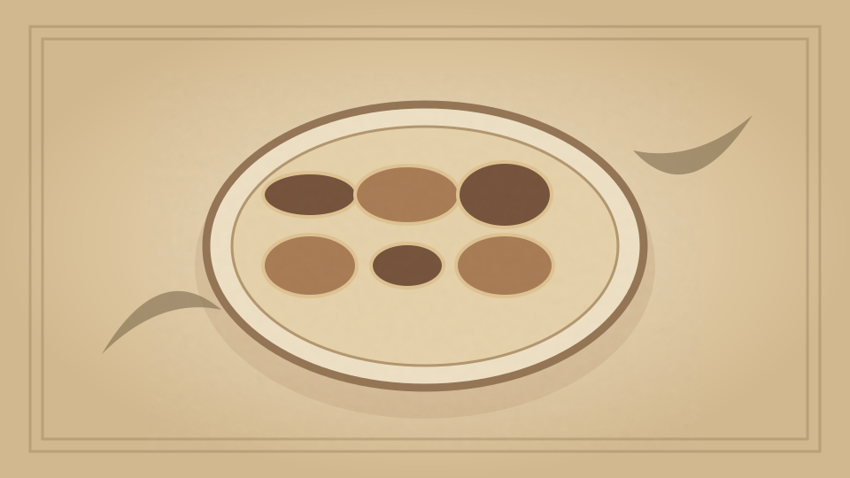

1910 · Fannie Merritt Farmer · FISH
White and Oily Fish
The Boston Cooking-School Cook Book

Historical Recipe
The following text is extracted from the 1910 edition, retaining historical terminology and quantities.
Original Ingredients & Directions
White fish have fat secreted in the liver. Examples: cod, haddock, trout, flounder, smelt, perch, etc.
Oily fish have fat distributed throughout the flesh. Examples: salmon, eels, mackerel, bluefish, swordfish, shad, herring, etc.
Cod belongs to one of the most prolific fish families (Gadidoe), and is widely distributed throughout the northern and temperate seas of both hemispheres. On account of its abundance, cheapness, and easy procurability, it forms, from an economical standpoint, one of the most important fish foods. Cod have been caught weighing over a hundred pounds, but average market cod weigh from six to ten pounds; a six-pound cod measures about twenty-three inches in length. Large cod are cut into steaks. The skin of cod is white, heavily mottled with gray, with a white line running the entire length of fish on either side. Cod is caught in shallow or deep waters. Shallow-water cod (caught off rocks) is called rock cod; deep-water cod is called off-shore cod. Rock cod are apt to be wormy. Cod obtained off George’s Banks, Newfoundland, are called George’s cod, and are commercially known as the best fish. Quantities of cod are preserved by drying and salting. Salted George’s cod is the best brand on the market. Cod is in season throughout the year.
Cod Liver Oil is obtained from cods’ livers, and has great therapeutic value. Isinglass, made from swimming bladder of cod, nearly equals in quality that made from bladder of sturgeon.
Automatically extracted transcription; editorial verification pending. Historical instructions may not meet modern food-safety standards.